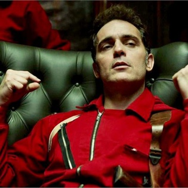

(Alvaro Morte)

(Pedro Alonso)
(Úrsula Corberó)
| Name | Description | Photo |
|---|---|---|
| El Professor (Alvaro Morte) |
The Professor is the leader of the gang, and the one who carefully plans and organises the assaults on the Royal Mint and the Bank of Spain. He is sophisticated but nerdy. The idea of the first heist is to avenge his father, whose idea it originally was. His grandfather had fought against the fascists in Italy. | |
| Berlin (Pedro Alonso) |
The police find out that Berlin's real name is Andrés de Fonollosa and that he is terminally ill during part 1. Meanwhile, he starts a coercive relationship with a hostage named Ariadna. In the final minutes of part 2, Berlin sacrifices himself so that the gang can escape, dying under police fire. Despite his death, he appears in a main role in part 3 through flashbacks to several years earlier, showing his original planning of the Bank of Spain heist and being married to a woman named Tatiana. |  |
| Tokyo (Úrsula Corberó) |
Tokyo is a thief on the run from the police after a failed robbery in which her boyfriend was killed. She was hired by the Professor to help in carrying out a heist of the Royal Mint in Madrid. Together with the other seven robbers chosen for the heist, she is taken to a secluded villa where they plan the heist for five months. The Professor asks each of the robbers to choose a city name to hide their identities during the robbery, and she chooses Tokyo. |